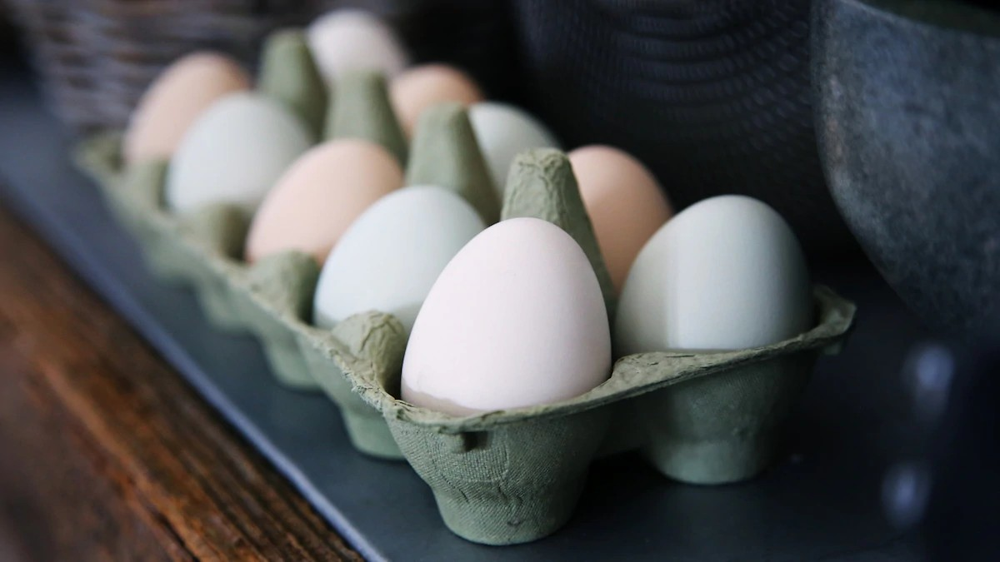

Protein molecules are largely made of hydrogen, oxygen and hydrogen, carbon and nitrogen. This Nitrogen is an essential part of amino acids that are needed for our body. They perform functions needed for our metabolism. They are used as energy and building blocks for our body. Our body structure is mostly made up of protein. Every molecule of protein is made up of thousands of amino acids. Our body needs these elements to create new protein and maintain the existing one. Protein that can be produced in our body is called non-essential protein, while protein that can’t be produced there is called non-essential. All animals needed essential proteins to survive. Protein classes of food with examples can be rice, beans, dairy products, fish, meat, eggs and so on.